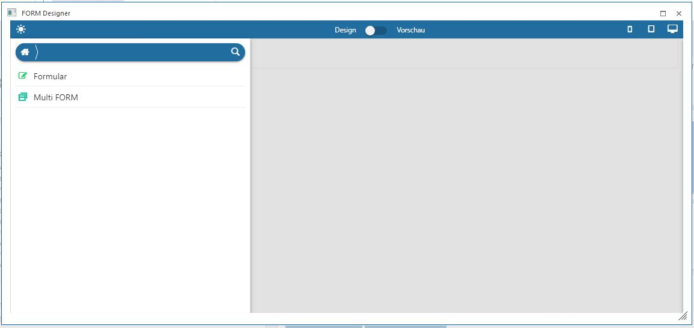

Wenn die Option "neue FORM" ausgewählt wurde, gibt es zwei mögliche Formulartypen, die angelegt werden können:
ü Formular
Damit wird ein FORM
erstellt, das frei gestaltet werden kann.

Abhängig vom ausgewählten Formular-Typ stehen in weiterer Folge unterschiedliche Optionen zur Verfügung.
Formular
Wenn "Formular" gewählt wird, dann werden im ersten Schritt die "FORM Einstellungen" vorgenommen und gespeichert - erst danach kann mit der Gestaltung des FORM begonnen werden.
Werden die vorgenommenen "FORM Einstellungen" abgespeichert, wird eine
Ø FORM_FortlaufendeNummer
in der WinLine BI-Datenbank angelegt. Standardmäßig wird diese Datenquelle als "private" Datenquelle angelegt. Das kann in weiterer Folge im DataCenter indiv. geändert werden, indem der dort liegende Button "Datenquelle auf öffentlich umstellen" getätigt wird.
Multi FORM
Wird "Multi FORM" angewählt, dann werden im ersten Schritt die "Multi FORM Einstellungen" vorgenommen und gespeichert werden. Im nächsten Schritt erfolgt die Auswahl der FORMs oder / und individuellen Formulare.